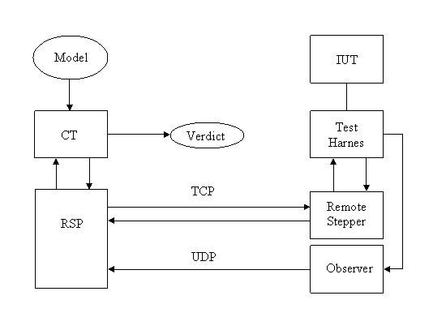
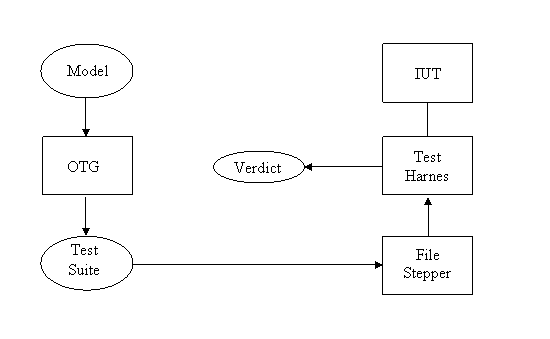
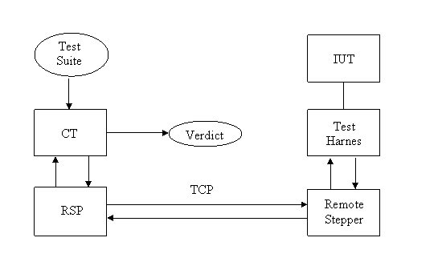
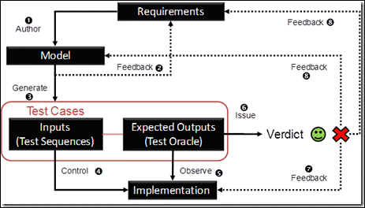

NModelRS
NModelRS is a remote
stepper for NModel, enabling model-based testing of implementations in other
languages than C#, in particular Java.
NModel is a
model-based testing and analysis framework for model programs written in C#. It
is explained and used in the book Model-based Software Testing and Analysis with
C# by Jonathan
Jacky, Margus Veanes, Colin Campbell, Wolfram Schulte, Cambridge University
Press, 2008. NModel is free open source available at http://nmodel.codeplex.com/.
How to use it
For a short introduction to NModel look here.
Having a C#
model of a system you can test an implementation (IUT) of the system if you
have a test harness (stepper) that can execute the actions against the
implementation. NModelRS provides a RemoteStepperProxy
(RSP) you can use with NModel’s conformance tester (CT), allowing you to write
test harnesses in other languages and to execute them on other machines. The RSP
communicates with a remote stepper in the test harness over TCP and receives
asynchronous observations over UDP

NModelRS
provides a Java component with a Remote
Stepper and an Observer, but also a File Stepper that can replace the Remote
Stepper without changing the Test Harness. The File Stepper is used to execute
test suites generated by NModel’s Offline Test Generator (OTG) in the test
harness

Or you can
use the CT tool to execute the test suite

Background
Microsoft
has used Model-Based Testing for years and NModel is an offspring of the
development of Spec
Explorer 2010 for Visual Studio 2010.
Grieskampf
has told the Spec
Explorer Story including the relation to NModel.
The
research paper Multi-paradigmatic
Model-Based Testing describes lessons learned in applying MBT at Microsoft
and introduces the theory behind the tool.
The Spec
Explorer Team Blog explains MBT
in few words and an enticing diagram

General
advice on MBT can be found in the book Practical Model-Based Testing: A
Tools Approach by Mark Utting and Bruno Legeard, Morgan-Kaufmann 2006.
Chapter 10 presents The ATM Case Study; (A control-oriented model in UML)
using an ATMExample
developed by Russell C. Bjork for a university course on Object-Oriented
Software Development.
This ATMExample
comes with a Java implementation of a simulated ATM. I have modelled the ATM in
C# and made a Java test harness being presented here.